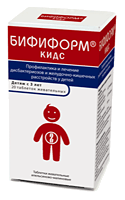

|
Несмотря на совершенствование профилактических и лечебных методик и появление в арсенале врачей новых высокоэффективных лекарственных средств инфекции дыхательных путей (ИДП) и желудочно-кишечного тракта (в первую очередь, острая диарея) продолжают оставаться актуальной проблемой, особенно у детей, посещающих детские коллективы. Так, у детей, посещающих детские дошкольные учреждения (ДДУ), отмечается в 1,5-3,0 раза выше риск развития инфекций дыхательных путей и ЖКТ по сравнению с «домашними» детьми [1, 2].
Одним из наиболее обсуждаемых в последние годы подходов к профилактике и лечению ИДП и терапии острой диареи является применение пробиотиков. Считается, что приём пробиотиков может улучшить иммунные свойства макроорганизма, в особенности, устойчивость к инфекционным заболевания дыхательных путей и желудочно-кишечного тракта. Следует отметить, что конкретный профилактический или лечебный эффект может быть приписан только определённому пробиотическому штамму, доказательства эффективности применения которого были получены в адекватных контролируемых клинических исследованиях, и данный эффект не должен переноситься на другие штаммы этого же вида [3].
В настоящее время наиболее изученными пробиотическими штаммами микроорганизмов с установленными положительными эффектами на здоровье человека являются Lactobacillus rhamnosus GG (ATCC 53103) и Bifidobacterium lactis Вb-12 (вид Bifidobacterium animalis, ATCC 25527) [4].

В 2010 г. в России зарегистрировано новое лекарственное средство для детей с 3 лет, содержащее L. rhamnosus GG и B. lactis Вb-12 — «Бифиформ Кидс» (свидетельство о государственной регистрации № ЛСР-009020/10 от 31.08.2010, компания Ferrosan A/S, Дания). Помимо пробиотических штаммов в состав препарата Бифиформ Кидс входят витамины В1 и В6. Витамин В1 (тиамин) — один из наиболее важных витаминов в энергетическом обмене, который является необходимым компонентом углеводного обмена, играет важную роль также в белковом и жировом обмене, оказывает влияние на проведение нервного возбуждения в холинергических синапсах. Витамин В6 (пиридоксин) участвует в синтезе нуклеиновых кислот, регулирует фосфорно-кальциевый обмен, улучшает функцию печени, участвует в кроветворении, имеет важное значение для нормальной функции центральной и периферической нервной системы.
Препарат Бифиформ Кидс показан для применения у детей старше 3 лет для лечения острых кишечных инфекций установленной и неустановленной этиологии, включая вирусные диареи; для профилактики и лечения дисбиозов различной этиологии; в комплексной терапии пищевой аллергии.
Эффективность использования B. lactis Вb-12 и L. rhamnosus GG при различных нозологических формах в педиатрической практике продемонстрирована в целом ряде клинических исследований.
Острая диарея
Пробиотики колонизируют стенку кишечника и ограничивают избыточный рост патогенных бактерий, а конкуренция за рецепторы слизистой уменьшает адгезию и рост энтеротоксичных грамотрицательных анаэробов и энтеропатогенных вирусов. Лактобактерии и бифидобактерии секретируют вещества, обладающие антибактериальными свойствами, снижают кислотность кишечного содержимого, позволяя «полезным» бактериям размножаться на поверхности слизистой [5]. Кроме того, L. rhamnosus GG, обладает иммуномодулирующим эффектом, может уменьшать выраженность воспаления в кишечной стенке [5].
Европейским обществом педиатрической гастроэнтерологии, гепатологии и питания (European Society of Pediatric Gastroenterology, Hepatology and Nutrition) было проведено самое крупномасштабное исследование по применению L. rhamnosus GG в лечении средне-тяжёлой и тяжёлой острой диареи у детей [6]. В исследовании приняли участие 287 детей в возрасте от 1 до 36 месяцев из 10 стран. Пациенты, получавшие стандартное лечение — регидратационную терапию — были рандомизированы на приём L. rhamnosus GG или плацебо. На фоне применения лактобактерий отмечалось сокращение длительности диареи, в среднем, на 14 ч, а у детей с ротавирусной этиологией диареи — на 20 ч, сокращались сроки пребывания в стационаре и вероятность длительной персистенции диареи [6].
В 2002 г. опубликован мета-анализ РКИ, в которых изучалось применение стандартной регидратационной терапии в сочетании с пробиотиками в лечении острой диареи у детей. В исследованиях применялись следующие пробиотики: L. rhamnosus GG — 9 исследований, другие пробиотики (бифидобактерии, другие лактобактерии, термофильные стрептококки, дрожжевые грибы) — 9 исследований. В большинстве случаев выявлено уменьшение продолжительности заболевания на 0,6-1,0 день, в то время как в 3 исследованиях наблюдалось сокращение продолжительности диареи на 1,5-3,0 дня. При применении лактобактерий наблюдалось наибольшее сокращение продолжительности диареи — на 1,1 дня [7]. В другом мета-анализе выявлено достоверное уменьшение количества дефекаций на 1,6/сутки ко 2 дню лечения при использовании лактобактерий по сравнению с контролем и сокращение продолжительности диареи у детей, в среднем, на 0,7 дня [8].
Таким образом, применение пробиотика L. rhamnosus GG является целесообразным дополнением к регидратационной терапии в лечении острой инфекционной диареи у детей.
Профилактика антибиотик-ассоциированной диареи
Помимо лечебного эффекта при острой диарее, использование L. rhamnosus GG эффективно для профилактики антибиотик-ассоциированной диареи (ААД), которая является частой нежелательной лекарственной реакцией антибактериальной терапии.
Механизм действия лактобактерий при лечении и профилактики ААД заключается в стимуляции местного иммунитета слизистой кишечника (синтез IgA и IgG, высвобождение интерферона); выработка соединений, обладающих антимикробной активностью и препятствие адгезии энтеропатогенов к эпителиоцитам кишечника [9].
В исследовании 167 детей в возрасте от 2 недель до 13 лет (в среднем, 4,5 года), получавших антибиотики по поводу инфекций дыхательных путей, были рандомизированы на применение L. rhamnosus GG или плацебо в течение 2 недель с момента начала антибактериальной терапии. Как оказалось, в группе применения лактобактерий отмечалось снижение частоты развития симптомов диареи приблизительно на 70% по сравнению с плацебо (5% vs 16%, соответственно) [10].
В другом исследовании с участием 202 детей в возрасте от 6 месяцев до 10 лет, получавших антибиотики внутрь, использование L. rhamnosus GG одновременно с антибиотиками привело к сокращению частоты развития симптомов диареи (8% в группе лактобактерий и 26% в группе плацебо) [11].
По данным мета-анализа, посвященного оценки роли различных пробиотиков в профилактике ААД у детей, использование L. rhamnosus GG оказывает статистически достоверный защитный эффект (относительный риск развития ААД на фоне применения данного штамма лактобактерий составляет 0,29) [12]. Аналогичные результаты были получены ещё в двух мета-анализах, в соответствии с которыми наиболее перспективными пробиотиками, продемонстрировавшие свою эффективность в профилактике ААД у детей, являются L. rhamnosus GG и дрожжевой гриб S. boulardii [13, 14].
Лечение пищевой аллергии
Согласно одной из гипотез, причиной столь широкого распространения пищевой аллергии являются качественные и количественные изменения кишечной микрофлоры.
Показано, что применение лакто- и бифидобактерий может стимулировать противоаллергический ответ, что, предположительно, обусловлено их способностью компенсировать нарушения состава микрофлоры и нормализовать проницаемость кишечной стенки [16, 17]. Кроме этого, пробиотики усиливают специфический IgA-ответ и снижают выработку цитокинов, связанных с аллергическим воспалением [15].
В плацебо контролируемом исследовании с участием 31 ребёнка в возрасте от 2,5 до 15,7 месяцев была проведена оценка эффективности применения L. rhamnosus GG у детей с атопической экземой и аллергией на коровье молоко. Все дети получали питательную молочную смесь с добавлением или без добавления L. rhamnosus GG в течение 1 месяца. Тяжесть заболевания оценивалась по шкале SCORAD. При оценке через 1 месяц было отмечено значительное снижение суммы баллов у детей, получавших пробиотик (с 26 до 15 баллов, р=0,008) по сравнению с группой плацебо (с 21 до 19 баллов, р=0,89) [17].
Во втором рандомизированном двойном слепом плацебо контролируемом исследовании 27 детей (средний возраст 4,6 месяца) с атопической экземой, находившихся на грудном вскармливании, были переведены на искусственное вскармливание с молочной смесью на основе высокогидролизированной сыворотки с или без добавления одного из двух штаммов пробиотиков: L. rhamnosus GG или B. lactis BB-12 в течение 6 месяцев. Спустя 2 месяца балльная оценка тяжести атопического дерматита по шкале SCORAD уменьшилась в обеих лечебных группах по сравнению с контрольной группой (р=0,002). Так, оценка по шкале составляла 16 баллов перед началом исследования, и уменьшилась в группе B. lactis BB-12 до 0 и в группе L. rhamnosus GG до 1, по сравнению с 13,4 баллами в контрольной группе [18].
Ещё в одном исследовании с аналогичным дизайном 230 детей с клиникой атопического дерматита или атопической экземой и предполагаемой непереносимостью коровьего молока получали либо L. rhamnosus GG, либо плацебо в течение 4 недель. Через 4 недели после окончания исследования у 120 детей была проведена двойная слепая плацебо контролируемая проба на переносимость коровьего молока. Как оказалось, не было отмечено статистически значимых различий в изменении оценки по шкале SCORAD между исследуемыми группами непосредственно после окончания лечение и через 4 недели. Однако, у детей, сенсибилизированных к белку коровьего молока (наличие специфических IgE), применение лактобактерий привело к более выраженному снижению оценки по шкале SCORAD, чем в группе плацебо (-26,1 vs -19,8, р=0,036), от исходного визита до оценки через 4 недели после завершения лечения. Результаты данного исследования свидетельствуют, что у детей с клиникой атопической экземы применение L. rhamnosus GG облегчает симптомы заболевания именно у пациентов с IgE-зависимой формой заболевания [19].
Таким образом, применение L. rhamnosus GG и B. lactis BB-12 эффективно в лечении атопической экземы у детей.
Профилактика инфекций дыхательных путей и ЖКТ
Первое исследование, посвящённое эффективности применения пробиотиков для профилактики ИДП и ЖКТ у детей было опубликовано в 2001 г. в British Medical Journal. В ходе многоцентрового двойного слепого рандомизированного плацебо контролируемого исследования проводилась оценка эффективности лактобактерий в профилактике ИДП и ЖКТ у детей, посещающих детские центры дневного пребывания в Хельсинки [20]. В исследование участвовали здоровые дети (n=571) в возрасте от 1 до 6 лет (средний возраст 4,6 года), которые были рандомизированы на получение молока, обогащённого L. rhamnosus GG на протяжении 7 месяцев в осенне-зимне-весенний период или на приём такого же по составу молока, но без пробиотика. Оказалось, что в группе детей, получавшей L. rhamnosus GG, отмечалось меньшее количество дней отсутствия в детском саду по болезни (4,9 vs 5,8; р=0,03). В группе использования лактобактерий число ИДП было ниже (97 vs 123, р=0,05), а также на 17% уменьшилась частота осложнённых ИДП и инфекций нижних отделов респираторного тракта. Кроме этого, достоверно меньше курсов антибиотиков по поводу ИДП (острого среднего отита, острого синусита, острого бронхита и пневмонии) назначалось в исследуемой группе по сравнению с контролем (111 vs 140, р=0,03). Период отсутствия симптоматики со стороны дыхательных путей был продолжительнее в группе применения лактобактерий по сравнению с контролем (5 vs 4 недели, р=0,03). В то же время не было отмечено достоверных различий в длительности периода ремиссии симптомов поражения ЖКТ (25 vs 24 недели, р=0,2) [20].
В исследовании, проведённом в Хорватии, была продемонстрирована профилактическая эффективность L. rhamnosus GG. В ходе рандомизированного двойного слепого плацебо контролируемого исследования дети (n=281), посещающие детские центры дневного пребывания, были случайным образом распределены на получение ферментированного молочного продукта, обогащённого L. rhamnosus GG (n=139) или такого же молочного продукта, но без лактобактерий (n=142), на протяжении 3 месяцев. Оказалось, что применение L. rhamnosus GG достоверно сокращает риск развития инфекций верхних дыхательных путей (относительный риск 0,66, 95% доверительный интервал [ДИ] 0,52-0,82), уменьшает риск развития ИДП, продолжающихся более 3 дней (относительный риск 0,57, 95% ДИ 0,41-0,78) и статистически достоверно уменьшает количество дней с симптомами со стороны дыхательных путей (p<0,001). Полученные результаты позволяют рекомендовать использование L. rhamnosus GG в качестве эффективной меры профилактики инфекций верхних дыхательных путей у детей, посещающих детские коллективы [21].
Таким образом, эффективность пробиотиков L. rhamnosus GG и B. lactis Вb-12, входящих в состав лекарственного средства Бифиформ Кидс, подтверждена в лечении острой диареи, профилактике антибиотик-ассоциированной диареи, лечении пищевой аллергии и профилактике инфекций дыхательных путей в педиатрической практике.
Список литературы
- Collet J.P., Burtin P., Gillet J., еt аl. Risk of infectious diseases in children attending different types of day-care setting. Respiration. 1994; 61(suppl 1):16-9.
- Nafstad P., Hagen J.A., Oie L., et al. Day care centers and respiratory health. Pediatrics. 1999;103: 753-8.
- World Gastroenterology Organization practice guideline: Probiotics and prebiotics. Arab Journal of Gastroenterology. 2009; 10(1): 33-42.
- Salminen S., Benno Y., de Vos W. Intestinal colonisation, microbiota and future probiotics? Asia Pac J Clin Nutr. 2006; 15(4): 558-62.
- Reid G., Jass J., Sebulski M.T., et al. Potential uses of probiotics in clinical practice. Clin Microbiol Rev. 2003; 16(4): 658-72.
- Guandalini S., Pensabene L., Zikri M.A., et al. Lactobacillus GG administered in oral rehydration solution to children with acute diarrhea: a multicenter European trial // J Pediatr Gastroenterol Nutr. 2000; 30: 54-60.
- Huang J., Bousvaros A., Lee J., et al. Efficacy of probiotic use in acute diarrhea in children, a meta-analysis. Dig Dis Sci. 2002; 47(11): 2625-34.
- Van Niel C.W., Feudtner C., Garrison M.M., et al. Lactobacillus therapy for acute infectious diarrhea in children: a meta-analysis. Pediatrics. 2002; 109(4): 678-84.
- D'Souza A.L., Rajkumar C., Cooke J., et al. Probiotics in prevention of antibiotic associated diarrhoea: meta-analysis. BMJ. 2002; 324(7350): 1361.
- Arvola T., Laiho K., Torkkeli S., et al. Prophylactic Lactobacillus GG reduces antibiotic-associated diarrhea in children with respiratory infections: a randomized study. Pediatrics. 1999; 104(5): e64.
- Vanderhoof J.A., Whitney D.B., Antonson D.L., et al. Lactobacillus GG in the prevention of antibiotic-associated diarrhea in children. J Pediatr. 1999; 135(5): 564-8.
- Johnston B.C., Supina A.L., Vohra S. Probiotics for pediatric antibiotic-associated diarrhea: a meta-analysis of randomized placebo-controlled trials. CMAJ. 2006; 175(4): 377-83.
- Szajewska H., Ruszczyński M., Radzikowski A. Probiotics in the prevention of antibiotic-associated diarrhea in children: a meta-analysis of randomized controlled trials. J Pediatr. 2006; 149(3): 367-72.
- Johnston B.C., Supina A.L., Ospina M., et al. Probiotics for the prevention of pediatric antibiotic-associated diarrhea. Cochrane Database Syst Rev. 2007; (2): CD004827.
- Kalliomaki M., Isolauri E. Role of intestinal flora in the development of allergy. Curr Opin Allergy Clin Immunol. 2003; 3(1): 15-20.
- Rosenfeldt V., Benfeldt E., Valerius N.H., et al. Effect of probiotics on gastrointestinal symptoms and small intestinal permeability in children with atopic dermatitis. J Pediatr. 2004; 145(5): 612-6.
- Majamaa H., Isolauri E. Probiotics: a novel approach in the management of food allergy. J Allergy Clin Immunol. 1997; 99(2): 179-85.
- Isolauri E., Arvola T., Sutas Y., et al. Probiotics in the management of atopic eczema. Clin Exp Allergy. 2000; 30(11): 1604-10.
- Viljanen M., Savilahti E., Haahtela T., et al. Probiotics in the treatment of atopic eczema/dermatitis syndrome in infants: a double-blind placebo-controlled trial. Allergy. 2005; 60(4): 494-500.
- Hatakka K., Savilahti E., Ponka A., et al. Effect of long term consumption of probiotic milk on infections in children attending day care centres: double blind, randomised trial. BMJ. 2001; 322(7298): 1327.
- Hojsak I., Snovak N., Abdović S., et al. Lactobacillus GG in the prevention of gastrointestinal and respiratory tract infections in children who attend day care centers: a randomized, double-blind, placebo-controlled trial. Clin Nutr. 2010; 29(3): 312-6.
13983
пробиотики, Бифиформ Кидс, Lactobacillus GG, L. rhamnosus GG, B. lactis Вb-12, лактобактерии, бифидобактерии |


")